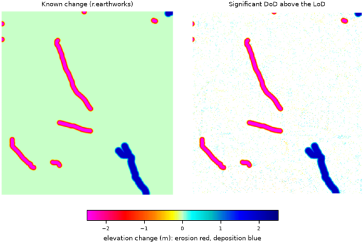

r.dem.change computes a DEM of Difference (DoD) between a co-registered post-event DEM and a reference DEM, applies a Level of Detection (LoD) threshold to isolate significant change, and reports volumetric erosion, deposition, and net change. Optional cleanup stages remove gross blunders and isolated significant cells.
The pipeline is:
output_dod = dem - reference, the
unmodified difference.|DoD| are
dropped before thresholding. The threshold is estimated over
stable_mask when supplied,
and stable_mask requires trim_percentile (without it the mask
has no effect and the parser rejects the combination),
otherwise over the whole DoD.output_sig keeps cells where
|DoD| exceeds the per-cell lod value (from
r.dem.lod or r.dem.errprop).With the -k flag the Fisher and Pearson kurtosis of the raw DoD distribution are reported as a diagnostic of noise and tail behavior.
A precomputed difference (typically the bias-corrected DoD from
r.dem.bias) can be supplied via dod instead of dem
and reference; the input column of volume_csv
records which raster was analyzed.
The lod input is a per-cell raster, so a spatially varying Level of Detection from r.dem.lod (local mode) or r.dem.errprop can be used directly. A uniform LoD is simply a constant raster.
output_dod always holds the raw, unmodified difference. Blunder
trimming and speckle removal affect only output_sig and the
reported volumes, so the raw difference remains available for inspection.
On the dem plus reference path the difference has to be written somewhere, so output_dod is required there. It is rejected on the dod path, where the difference already exists and is analyzed as supplied.
Volumes are computed from significant cells only, using the current region cell size. Ensure the computational region matches the input DEM resolution.
The kurtosis diagnostic (-k) requires the Python scipy package.
The commands below use the example scene built in the r.dem toolset manual, which is derived from the North Carolina sample dataset. Build it there first.
Threshold the debiased difference against the detection limit and report volumes:
g.region raster=elev_lid792_1m
r.dem.change -n dod=dod_debiased lod=lod_filled \
output_sig=dod_significant volume_csv=volumes.csv
The volumes can be checked against the volumes r.earthworks moved when the scene was built; they land within a few percent.
The -n flag matters here. Without it, noise that clears the detection limit by chance is counted as change, and on this scene that inflates both volumes by roughly ten percent. Speckle removal drops isolated cells, which real erosion and deposition are not.
Trim blunders on stable ground first, remove isolated significant cells, and report the distribution kurtosis as a noise diagnostic:
r.dem.change dod=dod_debiased lod=lod_local \
output_sig=dod_significant_clean \
trim_percentile=99 stable_mask=stable_terrain -n -k
On the dem plus reference path the raw difference has to be written, so output_dod is required:
r.dem.change dem=dsm_post reference=elev_lid792_1m lod=lod_global \
output_dod=dod_uncorrected output_sig=dod_significant_raw

Corey T. White, Center for Geospatial Analytics, NC State University
{kind=link}